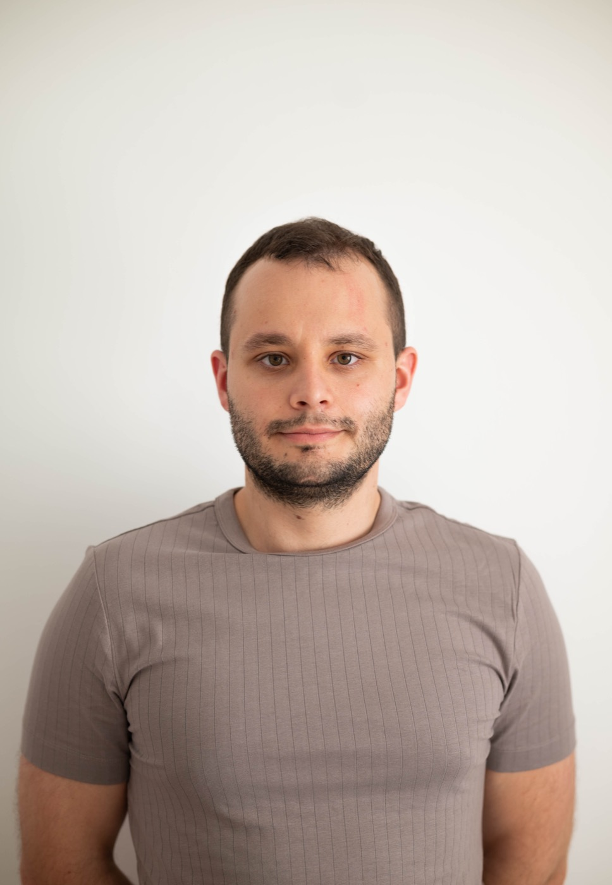

Rólunk
ValidPlan Kft. - mérnöki létesítmények tervezése
A ValidPlan Kft. a közúti hidak, mérnöki műtárgyak és építési szerkezetek tervdokumentációját készíti átlátható, kivitelezhető mérnöki logikával.

Céges profil
ValidPlan Kft. - mérnöki létesítmények tervezése
A ValidPlan Kft. 2022 júliusában jött létre. Tulajdonosa és ügyvezetője Bodor Dániel okleveles építőmérnök. A cég közúti hidak komplett tervdokumentációjának elkészítésével foglalkozik tanulmánytervi, engedélyezési, kiviteli és megvalósulási tervfázisokban.
Céges profil
Tervfázistól a kivitelezhető dokumentációig
Közúti és kerékpáros hidak
Komplett tervdokumentáció tanulmánytervi, engedélyezési, kiviteli és megvalósulási tervfázisokban.
Mérnöki szerkezetek
Támfalak, meglévő hidak felújítása, magasépítési szerkezetek és kapcsolódó műtárgyak tervezése.
Közlekedési környezet
Kerékpárutak, alsóbbrendű közutak felújítási munkái és forgalomtechnikai tervezési feladatok.
Releváns referenciák
Kiemelt munkák a cégismertető alapján
- 27. sz. főút, Szendrőládi Bódva-híd átépítése - kiviteli tervezés, 2022.
- Petőháza-Fertőd kerékpárút, 2 db kerékpáros műtárgy engedélyezési és kiviteli tervezése, 2022.
- Bokod-Oroszlány kerékpárút, 1 db kerékpáros műtárgy engedélyezési tervezése, 2022.
- Baja, Sportuszoda és élményfürdő gyalogos műtárgy kiviteli tervei, 2023.
- Miskolc, 3. sz. főút feletti híd átépítése - kiviteli tervezés, 2024.